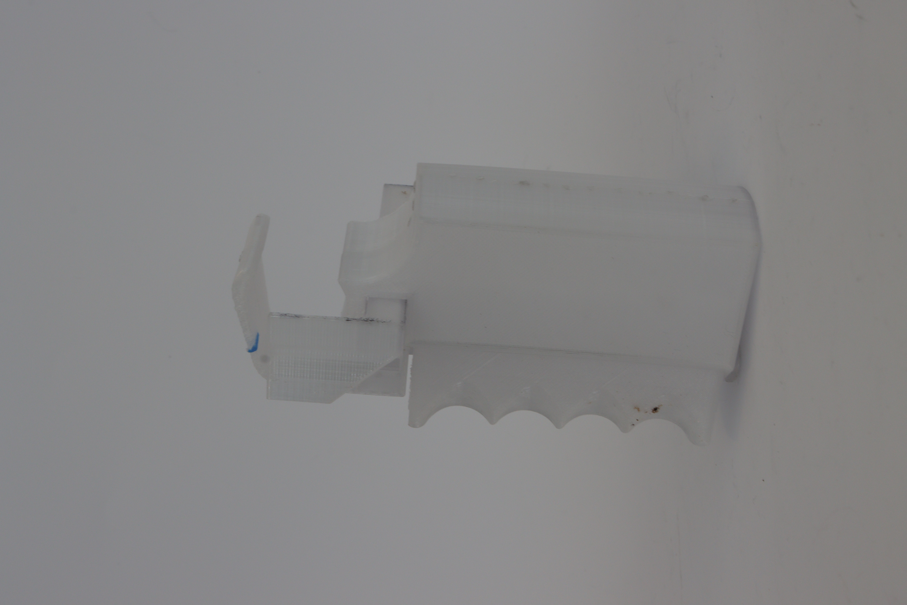

The M.A.R.T.I.A.N Bot
Capstone project: an 8-legged autonomous robot that builds underground habitats on Mars using locally sourced regolith, with topology-optimized structure and a 5-step DIG construction workflow.
Future-focused product design
I design and prototype new solutions—and improve existing products—with a focus on manufacturing, aerospace, robotics, medical devices, and emerging technologies.
Recognized at the Johnson & Wales University Student Research, Design & Innovation Symposium for M.A.R.T.I.A.N. Construction Robot (Technology & Innovation) and team project BloominBeds (Creativity & Design).
Capstone project: an 8-legged autonomous robot that builds underground habitats on Mars using locally sourced regolith, with topology-optimized structure and a 5-step DIG construction workflow.

Investigated multi-axis toolpath strategies to slash support-material waste, comparing 3-axis and 5-axis prints across geometry complexity and material usage.

Built a Raspberry Pi monitoring system with DHT22 sensors and a live web dashboard to keep raised garden beds within healthy temperature and humidity ranges year-round.

Designed and built a fully offline, multi-modal AI platform with multi-GPU inference, RAG memory, voice, image generation, and an OpenAI-compatible API—all running on local hardware.

User-centered ergonomic add-on for lab micropipettes—designed with and for a real client with rheumatoid arthritis, selected via comparative user testing across three prototypes.

Parametric Grasshopper/Rhino simulation of deployable electromagnetic devices that recreate Earth’s magnetosphere to shield Mars habitats from cosmic radiation.

Data-driven seating analysis at a university café—camera-based observation, Revit modelling, and ADA-compliant redesign proposals backed by a week of quantitative data.

Grasshopper/Rhino parametric simulation that grows organic vine-like structures across any 3D model surface using collision detection and bouncy solvers.

Two product explorations in personal storage: a modular stackable system and a wearable hands-free carry unit.

Full business feasibility study for a luxury vehicle-to-mobile-home conversion shop—market research, tiered pricing, $2M startup plan, and competitive analysis.